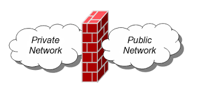
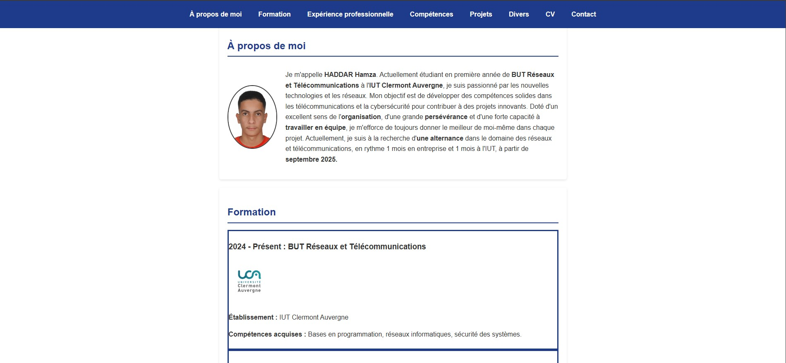
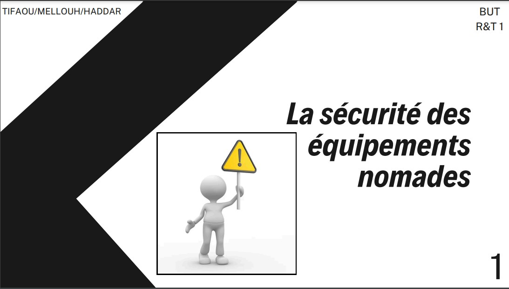
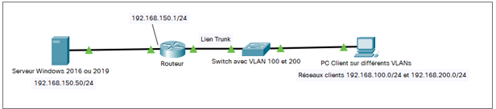
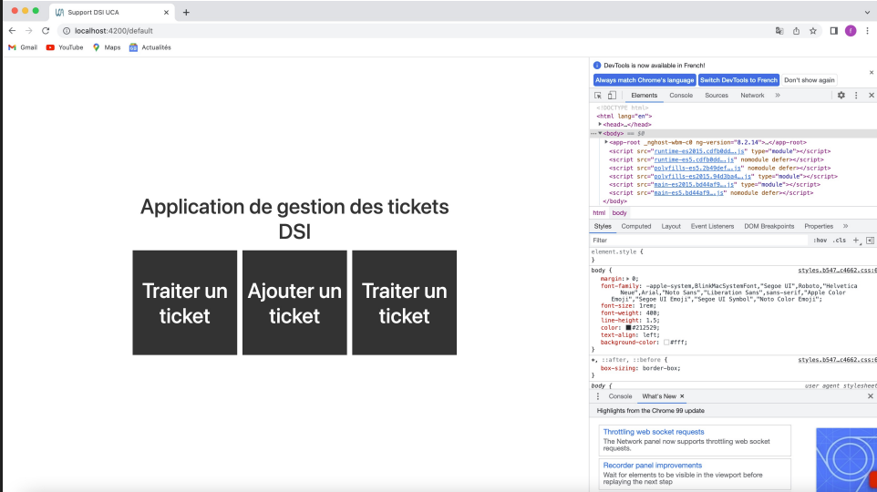

Projets (clique pour voir le détail)
Stage de BUT 2 - Mise en œuvre d'une solution de sauvegarde avec Veeam
Voir détails + missions + compétences acquises
Projet Firewall Stormshield - Sécurisation réseau
Voir détails + configuration + compétences acquises
SAE3.CYBER.04 Projet de Pentest
Voir détails + méthodologie + compétences acquises
SAE 14 - Portfolio
Voir détails + étapes + note
Projet Communication - Solid'R & NETSPHERE SOLUTIONS
Voir détails + livrables + note
SAE1.01 - Sécurité des équipements nomades
Voir détails + liens + livrables
Internet-2 & SAE2.01
Voir sujets + objectifs
SAE2.03 – Gestion de tickets support
Voir étapes + objectif
Stage de BUT 2 - Mise en œuvre d'une solution de sauvegarde avec Veeam
Objectif : Étudier et mettre en œuvre une solution de sauvegarde et de restauration avec Veeam Backup & Replication afin d'assurer la protection des données et la continuité des services informatiques.
Contexte : Ce projet a été réalisé dans le cadre de mon stage de deuxième année de BUT Réseaux et Télécommunications, parcours Cybersécurité, au sein de France 3 Auvergne. Le stage m'a permis de découvrir les problématiques liées à la sauvegarde des données en environnement professionnel et de participer à l'étude et à l'utilisation d'une solution de sauvegarde d'entreprise.
Étapes de réalisation :
- Découverte de l'environnement :
- - Analyse de l'infrastructure informatique et des besoins de sauvegarde de l'entreprise.
- - Étude du fonctionnement de Veeam Backup & Replication.
- Mise en œuvre de la solution :
- - Configuration et planification des tâches de sauvegarde.
- - Définition des politiques de rétention des données.
- - Vérification du bon déroulement des sauvegardes.
- Tests et validation :
- - Réalisation de tests de restauration.
- - Vérification de l'intégrité et de la disponibilité des données sauvegardées.
- Documentation :
- - Rédaction d'un rapport de stage présentant l'environnement de travail, les missions réalisées et les résultats obtenus.
Compétences développées : Sauvegarde et restauration de données, administration de Veeam Backup & Replication, planification des sauvegardes, politiques de rétention, tests de reprise d'activité, documentation technique, découverte d'une infrastructure de production et bonnes pratiques de protection des données.
Livrables :
- Rapport de stage de BUT 2 réalisé au sein de France 3 Auvergne.
- Documentation des procédures de sauvegarde et de restauration.
- Captures d'écran des configurations et des tests effectués.
Projet Firewall Stormshield - Sécurisation réseau

Objectif : Configurer et administrer un pare-feu Stormshield afin d'appliquer différentes politiques de sécurité réseau dans le cadre de travaux pratiques.
Contexte : Ce projet a été réalisé à l'IUT, en autonomie et parfois avec l'accompagnement du professeur. L'objectif était de mettre en pratique des demandes de labs autour de la sécurité réseau : filtrage, règles entrantes et sortantes, portail captif, VPN et contrôle des flux HTTP/HTTPS. Afin de consolider mes connaissances et préparer les évaluations, j'ai également rédigé un compte rendu personnel regroupant les différentes configurations réalisées et les notions importantes abordées pendant les travaux pratiques.
Étapes de réalisation :
- Configuration des règles de filtrage :
- - Création de règles entrantes et sortantes selon les besoins du lab.
- - Autorisation ou blocage de certains flux réseau.
- - Vérification du bon fonctionnement des règles appliquées.
- Mise en place du portail captif :
- - Configuration d'un accès contrôlé pour les utilisateurs.
- - Gestion de l'authentification avant l'accès au réseau.
- Configuration VPN :
- - Mise en place d'un accès sécurisé à distance.
- - Test de la connexion VPN et vérification de la communication entre les réseaux.
- Filtrage web HTTP/HTTPS :
- - Application de règles de filtrage web.
- - Contrôle des accès vers certains sites ou services.
- - Analyse des logs pour vérifier les flux autorisés ou bloqués.
Compétences développées : Administration d'un pare-feu Stormshield, sécurité réseau, filtrage entrant et sortant, configuration VPN, portail captif, filtrage HTTP/HTTPS, analyse des logs et application de politiques de sécurité.
Livrables :
- Comptes rendus des travaux pratiques réalisés.
- Captures d'écran des configurations Stormshield.
- Tests de validation des règles de sécurité mises en place.
- Compte rendu personnel de révision regroupant les principales configurations, commandes et bonnes pratiques de sécurisation sous Stormshield. Ouvrir le compte rendu de révision sur Stormshield.
SAE3.CYBER.04 Projet de Pentest

Objectif : Réaliser des tests d'intrusion (Pentest) sur plusieurs machines virtuelles vulnérables afin d'identifier leurs failles de sécurité, d'exploiter les vulnérabilités découvertes et de proposer une démarche méthodique d'analyse de sécurité.
Contexte : Dans le cadre du parcours Cybersécurité du BUT Réseaux et Télécommunications, ce projet a été réalisé en binôme. Il consistait à effectuer un audit de sécurité complet sur six machines virtuelles (Kioptrix, Blue, Academy, Dev, Butler et Black Pearl) et à rédiger un rapport technique détaillant l'ensemble des démarches et résultats obtenus.
Étapes de réalisation :
- Reconnaissance et collecte d'informations :
- - Identification des machines présentes sur le réseau et collecte d'informations sur les services exposés.
- - Réalisation de scans de ports et d'énumérations de services à l'aide d'outils spécialisés.
- Analyse des vulnérabilités :
- - Recherche et identification des vulnérabilités présentes sur chaque machine.
- - Évaluation de leur criticité et calcul des scores de vulnérabilité.
- - Justification des choix méthodologiques et des étapes suivantes.
- Exploitation des vulnérabilités :
- - Exploitation des failles découvertes afin d'obtenir un accès aux systèmes ciblés.
- - Réalisation d'escalades de privilèges lorsque cela était nécessaire.
- - Validation des résultats par des preuves et des captures d'écran.
- Rédaction du rapport technique :
- - Documentation complète des différentes étapes de l'audit de sécurité.
- - Présentation des résultats, analyses et recommandations de sécurité.
- - Préparation d'une soutenance orale permettant de justifier l'ensemble des démarches réalisées.
Compétences développées : Pentest, méthodologie d'audit de sécurité, analyse de vulnérabilités, énumération de services, exploitation de failles, escalade de privilèges, rédaction de rapports techniques, travail en équipe et communication technique.
Livrables :
- Rapport technique de pentest réalisé en binôme.
- Captures d'écran des différentes étapes de l'audit.
- Présentation orale du projet et justification des démarches employées.
SAE 14 - Portfolio

Objectif : Créer un portfolio personnel pour présenter mes compétences, mon parcours académique et mes expériences professionnelles de manière structurée et professionnelle.
Contexte : Ce projet a été réalisé en autonomie, dans un temps limité d'environ 8 heures. L'objectif était de concevoir un site web simple et efficace, tout en appliquant les compétences acquises en HTML, CSS, et en structuration de contenu pour le web.
Étapes de réalisation :
- Planification : Définition du contenu à inclure dans le portfolio, notamment les sections "Compétences", "Projets", "Expérience professionnelle" et "Contact".
- Conception : Création de la maquette du site avec une mise en page claire et responsive, en utilisant HTML et CSS pour structurer et styliser les différentes sections.
- Développement : Codage des différentes pages du portfolio, en intégrant des éléments comme des menus de navigation, des sections de texte et des images. Application des bonnes pratiques pour le référencement et l'accessibilité du site.
- Test et ajustements : Vérification du bon fonctionnement du site sur différents navigateurs et dispositifs, ainsi que l'ajustement des styles et de la mise en page pour assurer une expérience utilisateur optimale.
Note : J'ai obtenu la note de 16/20 pour l'ensemble de ce projet..
Projet Communication - Solid'R et NETSPHERE SOLUTIONS
Objectif : Simuler la création d'entreprises et développer des compétences en communication professionnelle à travers des échanges et présentations structurés.
Contexte : Dans le cadre du cours de communication, nous avons créé deux projets d'entreprise fictive : Solid'R et NETSPHERE SOLUTIONS. L'exercice a impliqué une présentation détaillée des entreprises, des échanges professionnels simulés et une collaboration en équipe.
Étapes de réalisation :
- Création de Solid'R :
- -Rédaction d'un document de présentation détaillé de l'entreprise, incluant son objectif, son équipe et son projet d'expansion.
- -Élaboration d'un scénario de développement, notamment l'acquisition d'une pièce adjacente pour agrandir les locaux.
- -Rédaction et envoi d'un mail professionnel à une entreprise de réseau pour solliciter des services. Ouvrir le document de présentation de l'entreprise Solid'R.

- Projet NETSPHERE SOLUTIONS :
- -Création d'une nouvelle entreprise spécialisée en solutions réseau. Ouvrir le Document de présentation de l'entreprise Netsphere Solutions.
- -Rédaction d'une réponse individuelle pour une entreprise partenaire simulée. Ouvrir la réponses individuelles pour NETSPHERE SOLUTIONS.
- -Conception d'une réponse collective sous forme de diaporama pour présenter nos solutions en équipe. Ouvrir le diaporama collectif NETSPHERE SOLUTIONS présenté en classe.
Livrables :
- Document de présentation de l'entreprise Solid'R.
- Document de présentation de l'entreprise Netsphere Solutions.
- Réponse individuelle pour NETSPHERE SOLUTIONS.
- Diaporama collectif NETSPHERE SOLUTIONS présenté en classe.
Note : J'ai obtenu la note de 12.50/20 pour l'ensemble de ce projet.
Projet SAE1.01 - Sécurité des équipements nomades

Objectif : Sensibiliser à la sécurité des équipements nomades, leur définition, leur fonctionnement, ainsi que les meilleures pratiques pour les sécuriser.
Contexte : Dans le cadre du projet SAE1.01 sur la cybersécurité et l'hygiène informatique, notre groupe de 3 élèves a été chargé de traiter le sujet de la sécurité des équipements nomades. Nous avons réalisé une recherche approfondie sur ce sujet sous forme de document, puis avons conçu un diaporama que nous avons présenté ensemble.
Étapes de réalisation :
- Recherche documentaire :
- - Étude des différentes menaces pesant sur les équipements nomades tels que les smartphones et les ordinateurs portables.
- - Identification des bonnes pratiques pour sécuriser ces appareils dans des environnements de travail et personnels. Ouvrir le document de recherche sur la sécurité des équipements nomades.
- Création du diaporama :
- - Première partie : Définition et fonctionnement des équipements nomades (présentation des différents types d'équipements, leurs usages et caractéristiques).
- - Deuxième partie : Sécurisation des équipements nomades (stratégies de protection contre les menaces comme les malwares, le vol de données, et l'utilisation des VPN). Ouvrir le diaporama de présentation sur la sécurisation des équipements nomades.
Livrables :
- Document de recherche sur la sécurité des équipements nomades.
- Diaporama de présentation sur la sécurisation des équipements nomades.
Note : Le projet a été évalué dans le cadre du cours SAE1.01.
Internet-2 & SAE2.01

Objectif : Appliquer les notions vues en cours pour comprendre et configurer des réseaux IPv6, des réseaux VLAN, des ACLs, un serveur DHCP et une translation d’adresse (NAT) sous Linux.
Contexte : Ces TP ont été réalisés dans le cadre des modules Internet 2 et Sae2.01. Ils nous ont permis de manipuler concrètement des équipements réseaux Cisco, des machines Linux et des scénarios réalistes de déploiement réseau.
Sujets abordés :
- 1. Découverte du fonctionnement du protocole IPv6 :
- - Étude de l’adressage IPv6, des types d’adresses et du protocole NDP (Neighbor Discovery Protocol).
- - Configuration d’adresses IPv6 statiques et test d’autoconfiguration (SLAAC).
- - Analyse des échanges réseau via Wireshark (paquets ICMPv6, Router Advertisement...). Ouvrir le sujet .
- 2. Translation d’adresse (NAT) avec iptables sous Linux :
- - Création d’un routeur Linux via deux interfaces réseau.
- - Application de règles de masquerading avec iptables.
- - Test de la translation NAT depuis un client interne vers l’extérieur. Ouvrir le sujet .
- 3. Configuration d’un réseau d’entreprise avec VLAN et ACL :
- - Création de plusieurs VLANs (administration, étudiants, invités...).
- - Configuration de ports de switch en accès ou en trunk.
- - Application de règles ACL pour restreindre les communications entre VLANs selon les politiques de sécurité. Ouvrir le sujet .
- 4. Configuration d’un serveur DHCP et routage inter-VLAN :
- - Installation et configuration d’un serveur DHCP multi-sous-réseaux.
- - Routage inter-VLAN avec sous-interfaces sur routeur ou switch L3.
- - Attribution automatique d’adresses IP aux clients dans chaque VLAN. Ouvrir le sujet .
Note : L’évaluation finale liée à ces travaux pratiques n’a pas encore eu lieu.
Projet SAE2.03 – Mise en place d’un outil de gestion de tickets de support

Objectif : Concevoir et développer une solution web pour gérer les demandes de support informatique des utilisateurs de l’université, tout en intégrant les différents rôles des utilisateurs (utilisateur simple, technicien, administrateur).
Contexte : Dans le cadre de la SAE2.03, nous avons été chargés de créer un site web permettant au service informatique de gérer efficacement les demandes d’assistance. Ce projet s’inscrit dans une logique d’amélioration de la communication entre les utilisateurs et la DSI, tout en automatisant le suivi et le traitement des tickets.
Étapes de réalisation :
- Analyse des besoins :
- - Étude du fonctionnement d’un système de gestion de tickets (types d’utilisateurs, cycles de vie des tickets, priorisation, etc.).
- - Rédaction d’un cahier des charges avec les fonctionnalités attendues (création, suivi, affectation, clôture des tickets).
- Conception de l’architecture :
- - Création de la base de données (utilisateurs, tickets, priorités, statuts...).
- - Définition des rôles et droits d’accès (utilisateur, technicien, administrateur).
- Développement du site web :
- - Mise en place de l’interface utilisateur avec formulaire de création de ticket, suivi et suppression.
- - Interface d’administration pour trier, affecter, mettre en attente ou clôturer les tickets.
- - Fonctionnalité pour rendre un ticket public si le problème concerne plusieurs utilisateurs.
- Tests et démonstration :
- - Vérification du bon fonctionnement des rôles et transitions des tickets.
Note : Le projet sera évalué prochainement dans le cadre de la SAE2.03, lors d’un examen à venir.